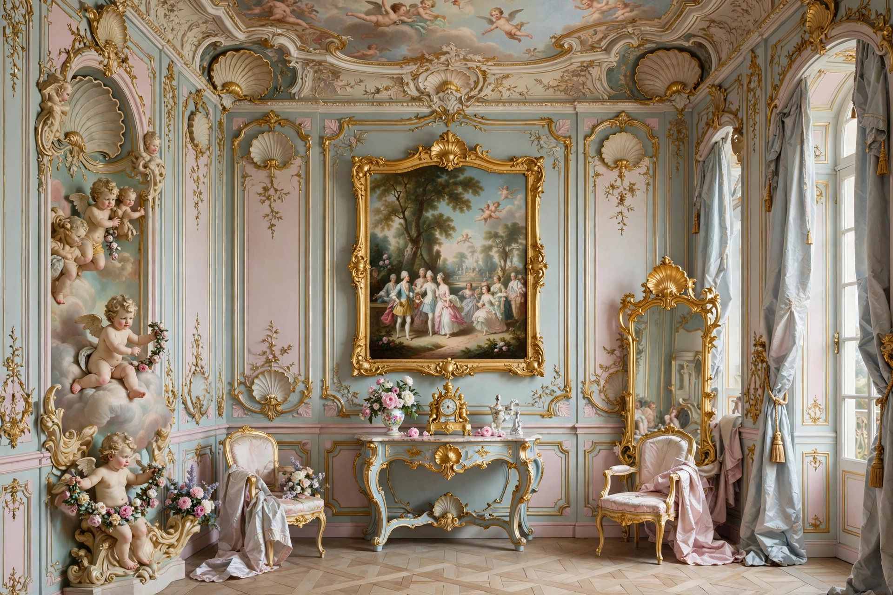

| Years active | c. 1720s–1770s |
|---|---|
| Country | France, then Europe |
| Influences | Baroque, rocaille |
Rococo, also known as Late Baroque, is an exceptionally ornamental and dramatic style of architecture, art and decoration that combined asymmetry, scrolling curves, gilding, white and pastel colours, sculpted moulding, and trompe-l'œil frescoes.
The style emerged in Paris in the early 18th century, in reaction against the grandeur of Louis XIV's Baroque at Versailles. The word is thought to combine French rocaille (shell-work) and Italian barocco. Designers such as Juste-Aurèle Meissonnier and Germain Boffrand created light, intimate interiors.
Rococo painting — by Antoine Watteau, François Boucher, and Jean-Honoré Fragonard — favoured playful, erotic, mythological scenes, soft colour, and the fête galante. See Rogier van der Weyden for earlier Flemish painting.
Rococo flourished in Bavaria, Austria, and Russia in churches and palaces (e.g. the Würzburg Residenz, Catherine Palace), before Enlightenment critics and Neoclassicism displaced it from the 1760s.